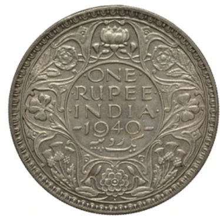
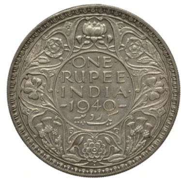

Vintage King George VI Era Coin: Authentic British Empire Relic
Step into the annals of history with this genuine King George VI era coin, a tangible relic from the heyday of the British Empire. Minted during the reign of King George VI (1936-1952), this coin carries the weight of a bygone era, echoing the grandeur and legacy of one of Britain's most iconic monarchs. Featuring the dignified profile of King George VI on the obverse, this coin transports you back to a time of global upheaval and resilience, when the world was embroiled in the throes of World War II. As the ruler of the United Kingdom and its vast dominions, King George VI navigated the turbulent waters of war and peace, leaving an indelible mark on history. On the reverse, intricate designs and symbols evoke the cultural richness and diversity of the territories under the British Crown. Each coin is a testament to the far-reaching influence of the empire, from bustling cities to remote outposts. Whether you're a seasoned collector, a history aficionado, or simply drawn to the allure of vintage treasures, this King George VI era coin holds undeniable appeal. Display it proudly as a centerpiece of your collection, or let it serve as a poignant reminder of a bygone era. With its authentic patina and historical significance, this coin is more than a mere artifact—it's a tangible link to the past, a window into a world shaped by empire and ambition. Don't let this opportunity slip away. Add a touch of history to your collection with this vintage King George VI era coin today.
 
